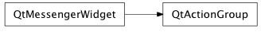

Bases: enaml.widgets.messenger_widget.MessengerWidget
A non visible widget used to group actions.
An action group can be used in a MenuBar or a ToolBar to group a related set of Actions and apply common operations to the set. The primary use of an action group is to make any checkable actions in the group mutually exclusive.
Whether or not the actions in this group are exclusive.
Whether or not the actions in this group are enabled.
Whether or not the actions in this group are visible.
A read only property which returns the actions for this group.
alias of __NoInterface__

Bases: enaml.qt.qt_messenger_widget.QtMessengerWidget
A Qt implementation of an Enaml ActionGroup.